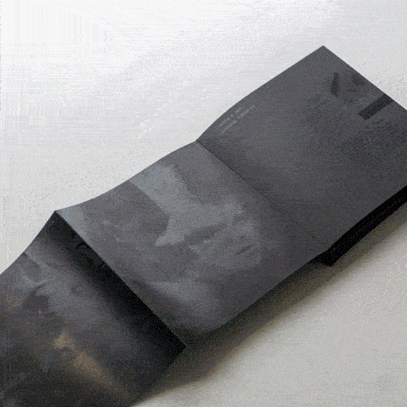

Recent: Graduation Show 2021, Design Academy Eindhoven
Recent: Graduation Show 2021, Design Academy Eindhoven
 Projects: selected design works from 2018 onwards
Projects: selected design works from 2018 onwards
Cathair Press: find and purchase domestically produced publications
Initiated by Noam Youngrak Son
Subscribe to the newsletter
Glossary
Deviant d-act is an attempt to explore the following questions about deviance.
From which condition are we going to deviate? Why should we deviate from it? How can we deviate from it? Who are we going to deviate with? What resources do we need to deviate? Did we really deviate from it? Can this experience of deviance be applied to anything else?
Domestic The following questions should be asked in order to keep the d-act practices sustainable and inclusive.
What is a domestic activity? How big can the domestic scale become? How far can domestic activity reach? Why is domestic activity depreciated? Who have we been domesticating? Where does domestic space start and end? Who owns domestic space? Who is allowed in this space? Who is excluded from this space? Who is exploited for this space?
Design
Design is a political tool.
Design is a form of labor.
Design is to make up stories like what this website does.
Website designed and developed by
Noam Youngrak Son, 2021